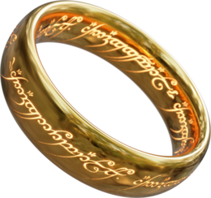

Overview
Lord of the Rings is an epic[1] high fantasy novel[a] by the English author and scholar J. R. R. Tolkien. Set in Middle-earth, the story began as a sequel to Tolkien's 1937 children's book The Hobbit, but eventually developed into a much larger work. Written in stages between 1937 and 1949, The Lord of the Rings is one of the best-selling books ever written, with over 150 million copies sold.[2] The title refers to the story's main antagonist,[b] the Dark Lord Sauron, who in an earlier age created the One Ring, allowing him to rule the other Rings of Power given to men, dwarves, and elves, in his campaign to conquer all of Middle-earth. From homely beginnings in the Shire, a hobbit land reminiscent of the English countryside, the story ranges across Middle-earth, following the quest to destroy the One Ring, seen mainly through the eyes of the hobbits Frodo, Sam, Merry, and Pippin. Aiding the hobbits are the wizard Gandalf, the men Aragorn and Boromir, the elf Legolas, and the dwarf Gimli, who unite as the Company of the Ring in order to rally the Free Peoples of Middle-earth against Sauron's armies and give Frodo a chance to destroy the One Ring in the fires of Mount Doom.
Plot
Bilbo Baggins celebrates his birthday and leaves the Ring to Frodo, his heir. Gandalf (a wizard) suspects it is a Ring of Power; seventeen years later, he confirms it was lost by the Dark Lord Sauron and counsels Frodo to take it away from the Shire. Gandalf leaves, promising to return, but fails to do so. Frodo sets out on foot with his cousin Pippin Took and gardener Sam Gamgee. They are pursued by Black Riders, but meet some Elves, whose singing to Elbereth wards off the Riders. The Hobbits take an evasive shortcut to Bucklebury Ferry, where they meet their friend Merry Brandybuck. Merry and Pippin reveal they know about the Ring and insist on joining Frodo on his journey. They try to shake off the Black Riders by cutting through the Old Forest. Merry and Pippin are trapped by the malign Old Man Willow, but are rescued by Tom Bombadil. Leaving Tom's house, they are caught by a barrow-wight. Frodo, awakening from the barrow-wight's spell, calls Tom Bombadil, who frees them and gives them ancient swords from the wight's hoard. The Hobbits reach the village of Bree, where they meet Strider, a Ranger. The innkeeper gives Frodo an old letter from Gandalf, which identifies Strider as a friend. Knowing the Black Riders will attempt to seize the Ring, Strider guides the group toward the Elvish sanctuary of Rivendell. At Weathertop, they are attacked by five Black Riders. Their leader wounds Frodo with a cursed blade. Strider fights them off and treats Frodo with the herb athelas. They are joined by the Elf Glorfindel, who rides with Frodo, now deathly ill, towards Rivendell. The Black Riders pursue Frodo into the Ford of Bruinen, where they are swept away by flood waters summoned by Elrond.
The Fellowship
Frodo recovers in Rivendell under Elrond's care. Gandalf informs Frodo that the Black Riders are the Nazgûl, Men enslaved by Rings of Power to serve Sauron. The Council of Elrond discusses what to do with the Ring. Strider is revealed to be Aragorn, the heir of Isildur who had cut the Ring from Sauron's hand in the Second Age, but claimed it for himself. The Ring was lost when Isildur was killed; it passed to Gollum and then to Bilbo. Gandalf reports that the chief wizard, Saruman, is a traitor. The Council decides that the Ring must be destroyed in the fire of Mount Doom in Mordor, where it was forged. Frodo takes this task upon himself. Elrond chooses companions for him: Sam, Merry, and Pippin; Gandalf; the Men Aragorn and Boromir, son of the Steward of Gondor; the Elf Legolas; and the Dwarf Gimli, representing the Free Peoples of the West. After a failed attempt to cross the Misty Mountains, the Fellowship risk the path through the Mines of Moria. They learn that Balin and his Dwarves, who had attempted to regain possession of Moria, were killed by Orcs. They are attacked by Orcs and a Balrog, a fire demon. Gandalf confronts the Balrog: both fall into an abyss. The others escape to the Elvish forest of Lothlórien, where the Lady Galadriel tests their loyalty, and gives them magical gifts. She allows Frodo and Sam to look into her vision-giving fountain, the Mirror of Galadriel. Frodo offers her the Ring: she refuses, knowing that it would master her. Galadriel's husband Celeborn gives the Fellowship boats, cloaks, and waybread. They travel down the River Anduin. At Amon Hen, Boromir tries to take the Ring, but Frodo puts on the Ring and disappears. Frodo chooses to cross the river and go alone to Mordor, but Sam, guessing what he intends, intercepts him.
Characters
The series features a vast array of characters, from hobbits and elves to wizards and orcs.
Main Characters
- Frodo Baggins
- Aragorn
- Gandalf
- Legolas
- Gimli
Legacy
The enormous popularity of Tolkien's work expanded the demand for fantasy. Largely thanks to The Lord of the Rings, the genre flowered throughout the 1960s and enjoys popularity to the present day.[129] The opus has spawned many imitations, such as The Sword of Shannara, which Lin Carter called "the single most cold-blooded, complete rip-off of another book that I have ever read,"[130] as well as alternate interpretations of the story, such as The Last Ringbearer. The Legend of Zelda, which popularized the action-adventure game genre in the 1980s, was inspired by The Lord of the Rings among other fantasy books.[131][132] Dungeons & Dragons, which popularized the role-playing game genre in the 1970s, features several races from The Lord of the Rings, including halflings (hobbits), elves, dwarves, half-elves, orcs, and dragons. However, Gary Gygax, the lead designer of the game, stated that he included these elements as a marketing move to draw on the popularity the work enjoyed at the time he was developing the game.[133] Because Dungeons & Dragons has gone on to influence many popular games, especially role-playing video games, the influence of The Lord of the Rings extends to many of them, with titles such as Dragon Quest,[134][135] EverQuest, the Warcraft series, and The Elder Scrolls series of games[136] as well as video games set in Middle-earth itself.
Adaptations
A variety of filmmakers considered adapting Tolkien's book, among them Stanley Kubrick, who thought it unfilmable,[99][100] Michelangelo Antonioni,[101] Jim Henson,[102] Heinz Edelmann,[103] and John Boorman.[104] A Swedish live action television film, Sagan om ringen, was broadcast in 1971.[105] In 1978, Ralph Bakshi made an animated film version covering The Fellowship of the Ring and part of The Two Towers, to mixed reviews.[106] In 1980, Rankin/Bass released an animated TV special based on the closing chapters of The Return of the King, gaining mixed reviews.[107][108] In Finland, a live action television miniseries, Hobitit, was broadcast in 1993 based on The Lord of the Rings, with a flashback to Bilbo's encounter with Gollum in The Hobbit.[109][110]
Motion Picture
A far more successful adaptation was Peter Jackson's live action The Lord of the Rings film trilogy, produced by New Line Cinema and released in three instalments as The Lord of the Rings: The Fellowship of the Ring (2001), The Lord of the Rings: The Two Towers (2002), and The Lord of the Rings: The Return of the King (2003). All three parts won multiple Academy Awards, including consecutive Best Picture nominations. The final instalment of this trilogy was the second film to break the one-billion-dollar barrier and won a total of 11 Oscars (something only two other films in history, Ben-Hur and Titanic, have accomplished), including Best Picture, Best Director and Best Adapted Screenplay.[111][112] Commentators including Tolkien scholars, literary critics and film critics are divided on how faithfully Jackson adapted Tolkien's work, or whether a film version is inevitably different, and if so the reasons for any changes, and the effectiveness of the result.[113]